Cosentino — tecnologia SenSa
Granito Sensa: pedra verdadeira, protegida em fábrica contra manchas
A bancada em granito Sensa mantém tudo o que se gosta no granito, a dureza, os cristais e o carácter único, eliminando a sua principal exigência. Graças à tecnologia SenSa da Cosentino, a pedra resiste melhor às manchas sem impermeabilização regular. Cortamo-la por medida em Mafra.
A bancada em Granito Sensa
Granito natural tratado com a tecnologia SenSa by Cosentino: maior resistência às manchas sem impermeabilização regular, preservando o aspeto natural.
Tecnologia SenSa by Cosentino
- Tratamento antimanchas invisível
- Sem impermeabilização regular
- Aspeto natural preservado
- Dureza Mohs 6-7
- Garantia do fabricante
Acabamentos e formatos
- Polido brilhante
- Amaciado mate
- Tratamento SenSa · 20/30 mm
Cores disponíveis
18 cores disponíveis, que pode também ver ao vivo na nossa fábrica de Mafra, mediante marcação.
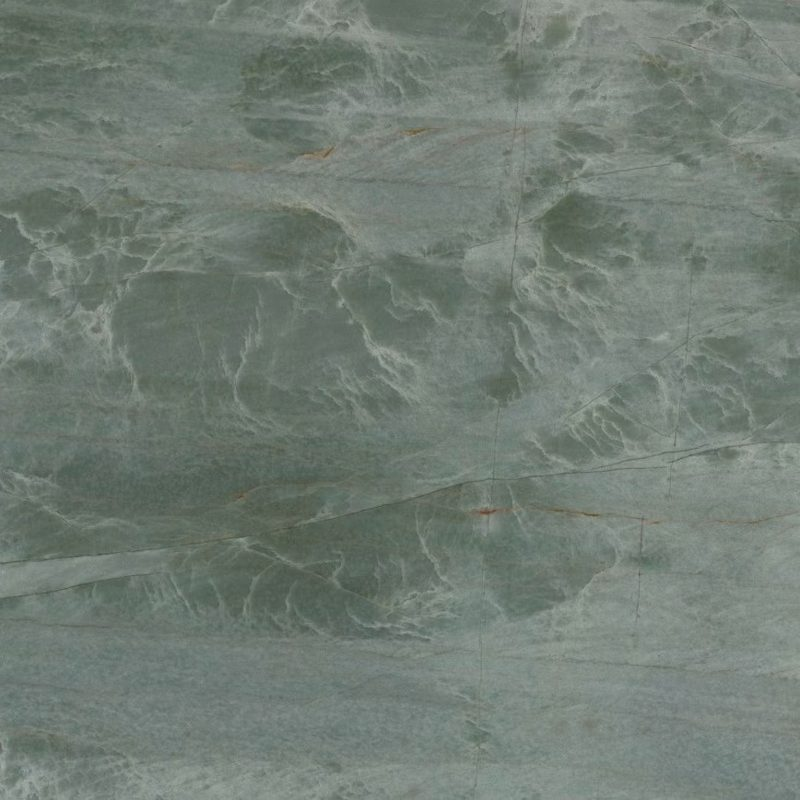
ItaraPolido · Amaciado · Castanho-douradoGranito castanho-dourado · tratamento SenSa · 20/30 mm- DelicatusPolido · Amaciado · Branco com veiosGranito branco delicado com veios dourados · 20/30 mm
- Arctic CreamPolido · Amaciado · CremeGranito bege-creme · 20/30 mm
- Giallo OrnamentalPolido · Amaciado · DouradoGranito amarelo-dourado · 20/30 mm
- Bianco RomanoPolido · Amaciado · Branco rosadoGranito branco com veios cinzentos e rosados · 20/30 mm
- Verde BahiaPolido · Verde tropicalGranito verde tropical brilhante · 20/30 mm
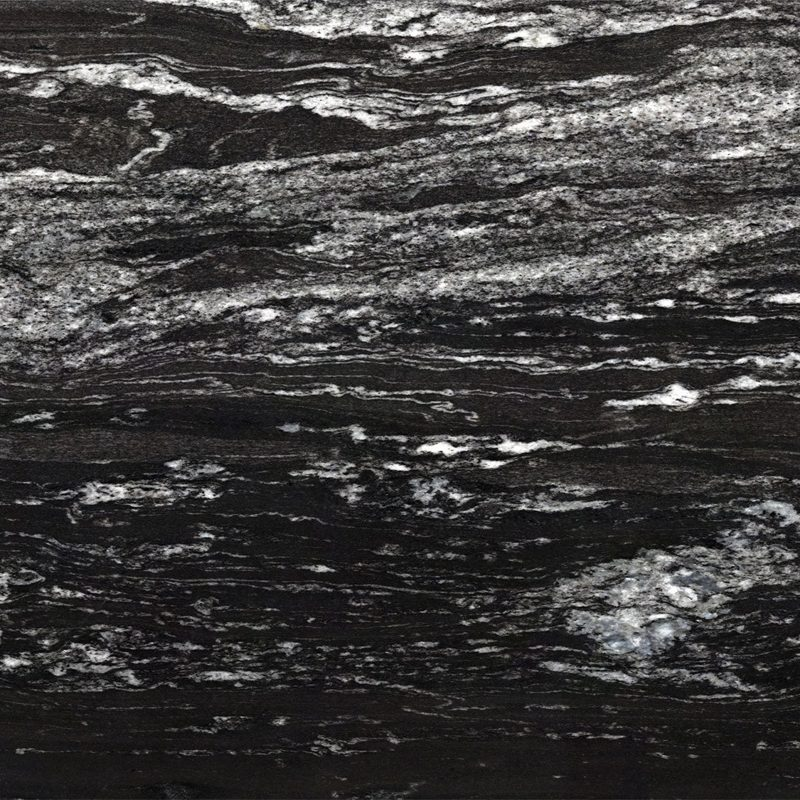
Black BeautyCas (mate) · Mir (brilhante) · Suède (mate)Preto profundo percorrido por volutas brancas.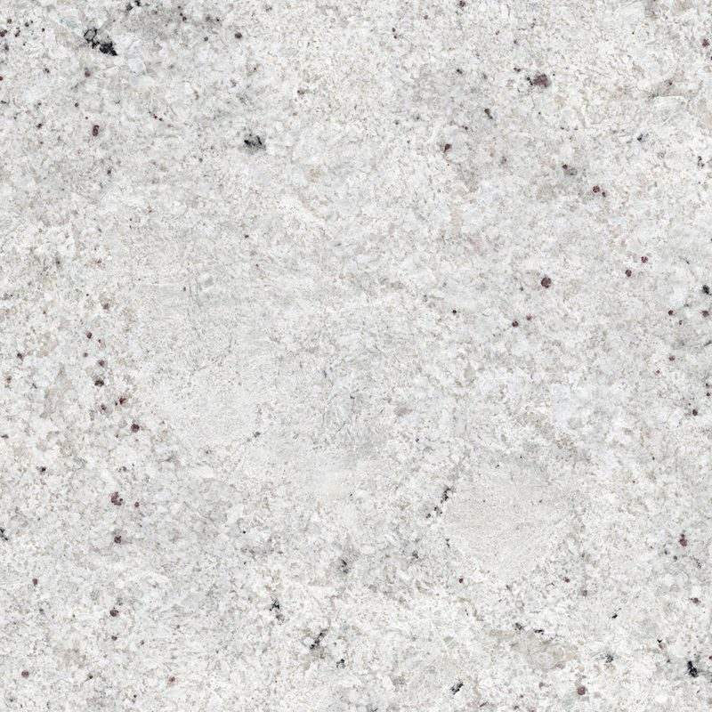
Colonial WhiteCas (mate) · Mir (brilhante) · Suède (mate)Branco creme salpicado de cinzento e bordeaux.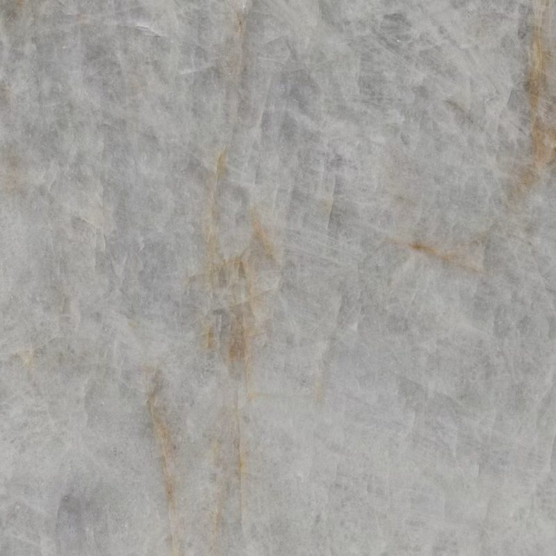
CristaloCas (mate) · Mir (brilhante) · Suède (mate)Branco cristalino translúcido com veios dourados.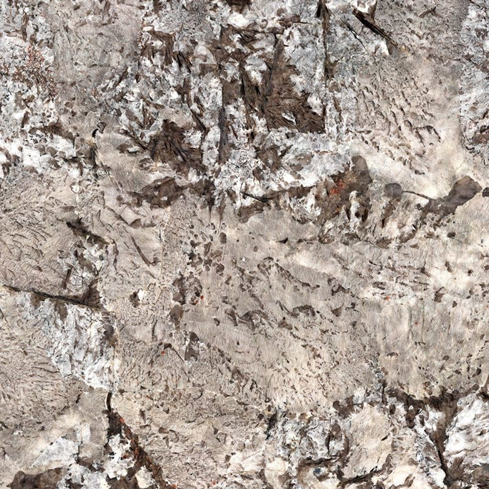
Glacial BlueCas (mate) · Mir (brilhante) · Suède (mate)Branco gelado com veios cinzento-azulados.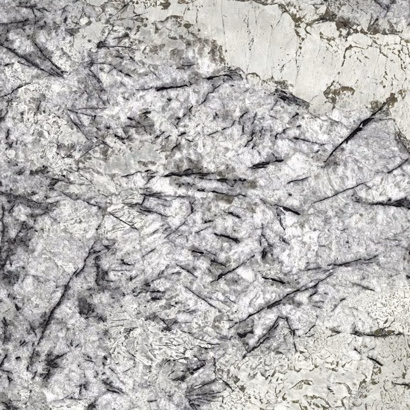
Ice BlueCas (mate) · Mir (brilhante) · Suède (mate)Branco geado com véus cinzento-azulados.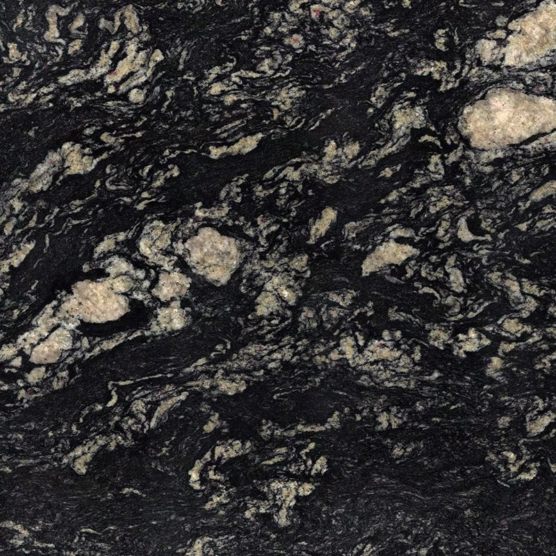
Indian BlackCas (mate) · Mir (brilhante) · Suède (mate)Preto denso de grão fino e regular.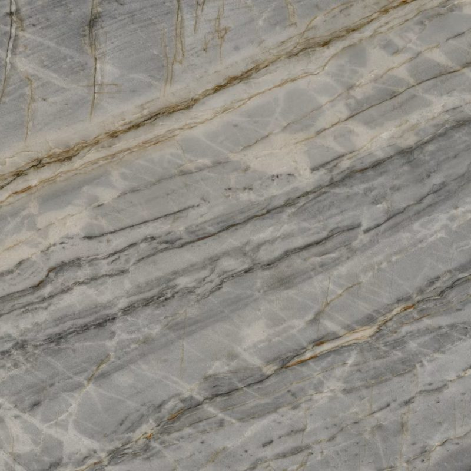
MarauCas (mate) · Mir (brilhante) · Suède (mate)Cinzento pérola a taupe com veios castanho-dourados acobreados.- Moak BlackCas (mate) · Mir (brilhante) · Suède (mate)Preto profundo com subtis matizes cinzentos.
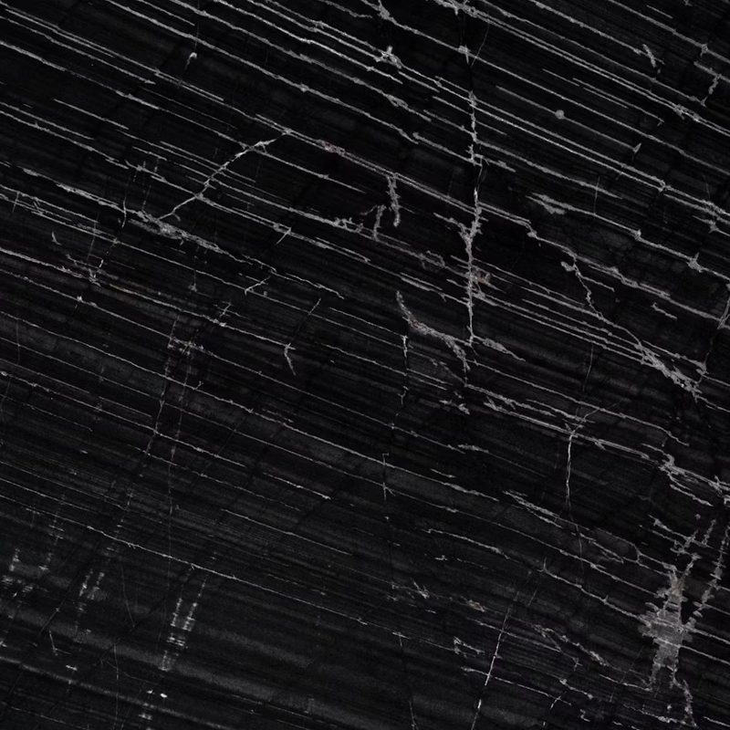
OihanaCas (mate) · Mir (brilhante) · Suède (mate)Preto profundo com finos veios brancos entrecruzados.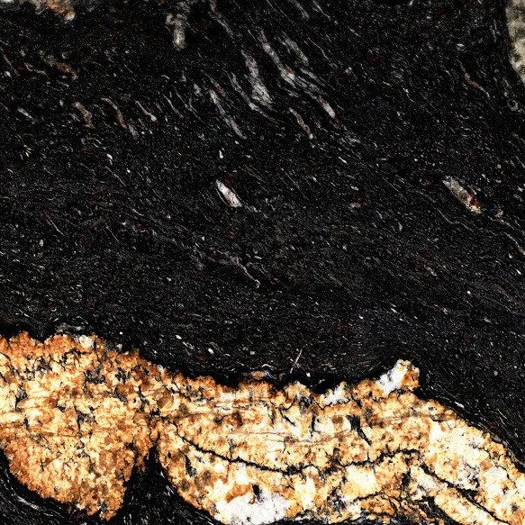
OrinocoCas (mate) · Mir (brilhante) · Suède (mate)Bege dourado quente com volutas pretas e fios acobreados.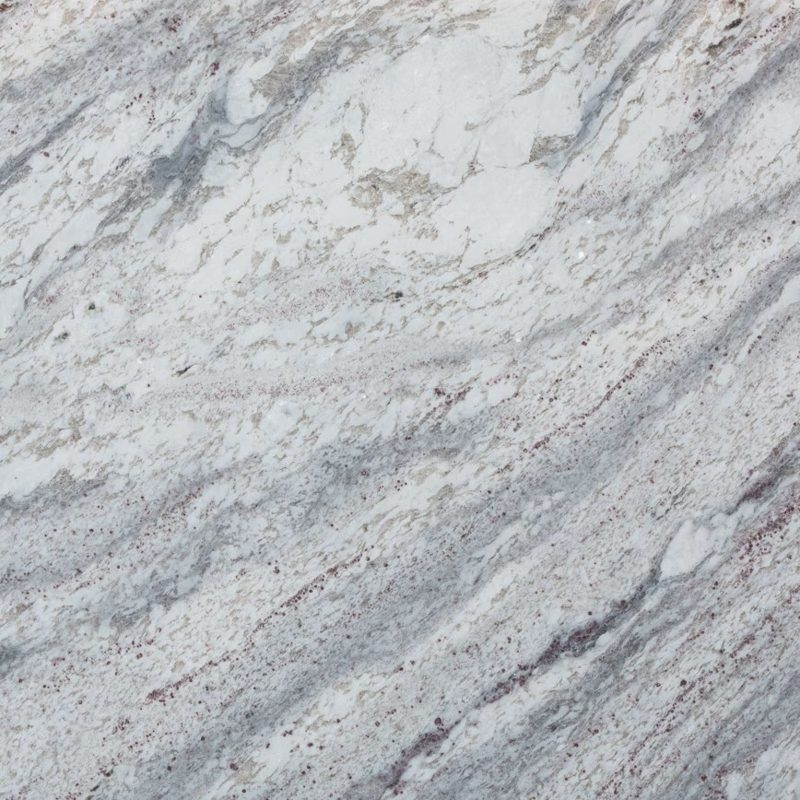
Sant AngeloCas (mate) · Mir (brilhante) · Suède (mate)Branco acinzentado de grão cristalino salpicado de cinzento.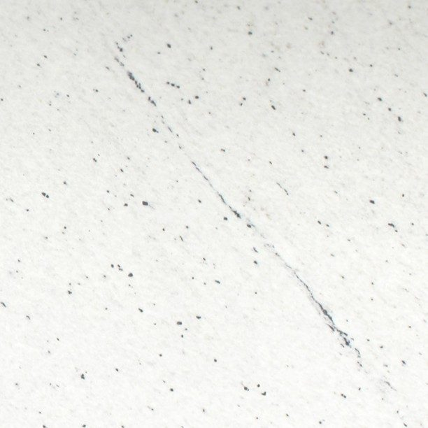
SiberiaCas (mate) · Mir (brilhante) · Suède (mate)Branco acinzentado com veios escuros ondulados.
Ambientes
Cozinha familiarAmbiente em granito 
Bancada de lavatório naturalAmbiente em granito claro
Porquê escolher granito Sensa para a sua bancada
O granito Sensa destina-se a um perfil preciso: quer uma pedra natural que aguente a cozinha de todos os dias, mas não quer vigiar a bancada nem tirar o impermeabilizante do armário todos os anos. A proteção SenSa é invisível: não cria película brilhante nem altera a cor.
A pedra mantém a dureza Mohs de 6 a 7, a resistência ao calor e aos riscos. Os salpicos de azeite, café ou vinho, que marcariam um granito claro sem tratamento, limpam-se com muito mais facilidade. Uma garantia do fabricante acompanha o tratamento.
O granito Sensa existe em polido ou amaciado, em 20 ou 30 mm. É muitas vezes a melhor escolha para uma família que gosta do encanto de uma pedra verdadeira.
Escolher a cor do granito Sensa
É nos granitos claros que a proteção Sensa faz mais diferença. O Colonial White, o Delicatus, branco delicado com veios dourados, ou o Bianco Romano, com veios cinzentos e rosados, oferecem uma cozinha luminosa sem o receio da primeira mancha de azeite. O Arctic Cream e o Giallo Ornamental apostam em tons creme e dourados, acolhedores com madeira.
Quem prefere cores escuras encontra o Black Beauty, o Indian Black ou o Moak Black, elegantes e fáceis de viver. Para um toque de cor, o Verde Bahia propõe um verde tropical brilhante, e o Itara um castanho dourado.
Como em qualquer pedra natural, cada chapa é ligeiramente diferente. Algumas cores só existem em polido: o catálogo abaixo indica os acabamentos de cada uma.
As suas perguntas
O tratamento Sensa desgasta-se com o tempo?
O tratamento SenSa é aplicado em fábrica pela Cosentino e está coberto por uma garantia do fabricante, cujas condições lhe entregamos com o orçamento. Para o preservar, limpe com água e sabão suave e evite decapantes, solventes fortes e esfregões abrasivos. Não precisa de aplicar impermeabilizante por cima.
O granito Sensa existe em acabamento mate?
Sim. Conforme a cor, o granito Sensa existe em polido e amaciado, ou em Mir brilhante e nos acabamentos mate Suède e Cas. Só o Verde Bahia existe apenas em polido. O mate dá um aspeto mais natural e contemporâneo, com menos reflexos. Se procura um mate ainda mais suave ao toque, veja também o granito Texta da Cosentino, cujo acabamento aveludado é uma assinatura por si só.
Vamos falar do seu projeto
Um especialista analisa o seu pedido e responde em 48 horas úteis, com uma proposta por medida.